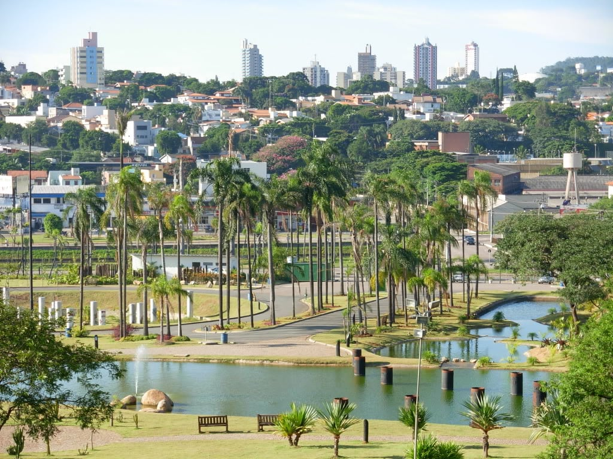

Jundiaí é um dos municípios mais prósperos do interior de São Paulo, conhecido por sua qualidade de vida, tradição e desenvolvimento econômico. Fundada em 1655, a cidade cresceu com a agricultura, especialmente a produção de uvas e vinhos, que até hoje marcam sua identidade cultural. Esse vínculo com o campo se mantém forte, ao mesmo tempo em que o município se modernizou e se tornou referência em inovação e sustentabilidade.
A cidade é famosa pela Rota da Uva, que atrai visitantes interessados em conhecer vinícolas, adegas e propriedades rurais que mantêm tradições familiares. Eventos como a Festa da Uva e a Expo Vinhos reforçam esse perfil enoturístico, colocando Jundiaí como um destino único para quem aprecia gastronomia e cultura.
Além do turismo rural, Jundiaí também oferece opções de lazer urbano, parques ecológicos e centros culturais. Combinando história, natureza e modernidade, a cidade se destaca como polo econômico e turístico, atraindo moradores e visitantes que buscam bem-estar e contato com diferentes experiências.
• Rota da Uva – Conjunto de vinícolas e propriedades rurais que oferecem degustações e experiências culturais.
• Parque da Cidade – Amplo espaço de lazer e preservação ambiental, com lagos e áreas verdes.
• Museu Histórico e Cultural de Jundiaí (Solar do Barão) – Importante acervo sobre a história local.
• Festa da Uva – Evento tradicional que celebra a produção agrícola e movimenta o turismo regional.
• Parque Botânico Eloy Chaves – Espaço de contato com a natureza, ideal para famílias e visitantes.

Retorne a Página Anterior